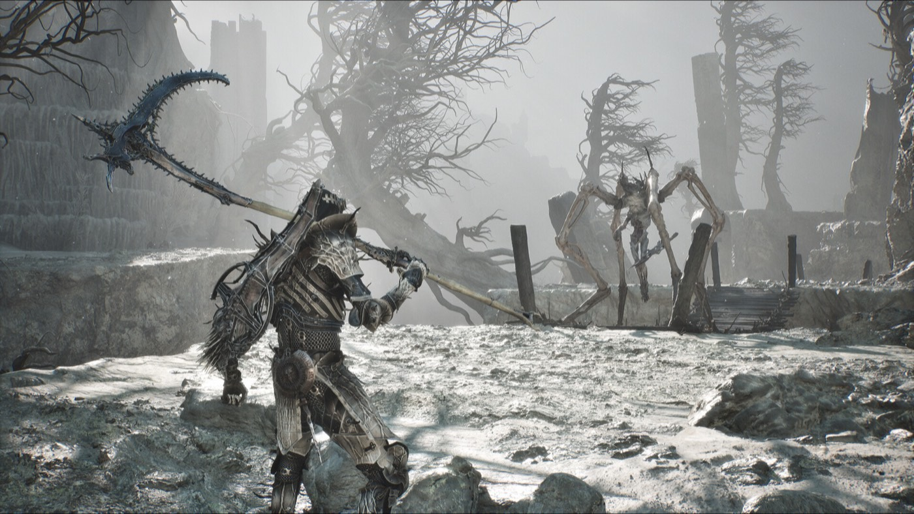

Boss guide
Zmey or Malborn Offspring first?
One published guide answers this directly, and it does something unusual: it tells you why its own answer might not apply to you. That caveat is the whole story.

The published answer
Zmey is reported as the easier of the two compared with the Malborn Offspring.Tested The guide that says so immediately adds that this may be because they were running a fully powered-up Tiel Shell with several perks unlocked.Tested
That is not hedging. That is the actual answer: the ordering depends on your build, not on the bosses.
What that means in practice
If your Shell Bond is deep and your perks are unlocked, the reported ordering probably holds for you too. If you arrived here under-levelled — which is common, because this is late-game content and people push through — the comparison was never measured on your situation.
Zmey, the Unbidden is the final boss, at the centre of the Unfound Path.Unconfirmed Surviving its Cosmic Flames is the stated prerequisite for having a chance in that fight.Tested
Before you commit either way
Beating the final boss does not end the game or force you into New Game Plus.Unconfirmed You get a free-roam window afterwards, and there is a meaningful cleanup list to run through before you close the cycle. If you are weighing boss order, you are close enough that the cleanup list matters more than the ordering does.
Related
- All bosses in order
- Which Shell to take on your first run — the variable the comparison actually turned on
Where this comes from
Every claim above carries a marker. These are the sources behind them, graded by how directly they touch the retail build.
- GameSpot — All bosses and how to beat them TestedDirect comparison of Zmey and the Malborn Offspring, with the fully-upgraded-Tiel caveat; Cosmic Flames as the survival gate
- KeenGamer UnconfirmedZmey, the Unbidden as final boss at the centre of the Unfound Path; the post-boss free roam window
- GameTyrant UnconfirmedStandalone Malborn Offspring page